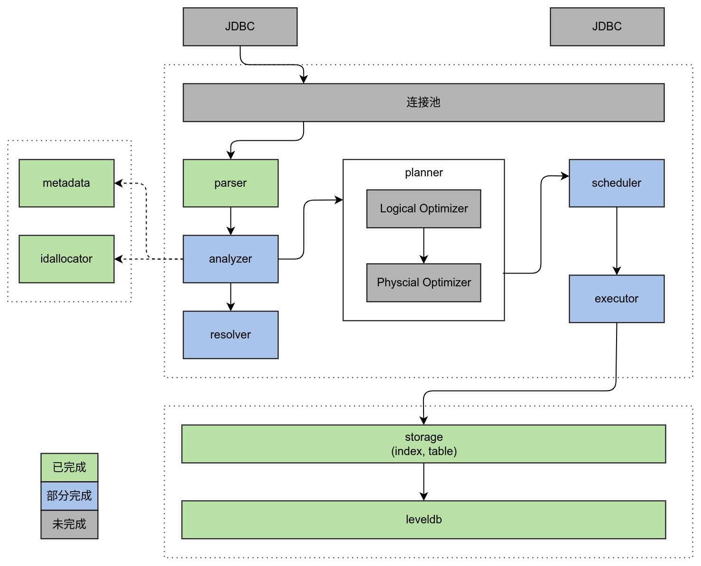

December 1, 2022
AmDB 为本人独立研发的一款单机版关系型数据库管理系统，旨在更加深入的学习数据库的相关知识，所涉及到的功能点会逐渐向 MySQL 对齐，后续应该会考虑完全兼容 MySQL 相关协议。
此外本数据库管理系统存储层提供了较好的 KV 存储接口，理论上可以接入任何 KV 存储系统（比如 Redis，LevelDB 等）。
1. 基本信息
#
2. 架构介绍
#

| 条目 |
说明 |
| parser |
用于解析 SQL 形成 parser::Node 构成的 AST。 |
| analyzer |
对 AST 进行分析，转成 LogicalNode 构成的 AST。 |
| resolver |
对 AST 的细节进行解析，补全需要的数据。 |
| planner |
对 LogicalNode 构成的 AST 进行分析（RBO/CBO）形成最佳的 PhysicalNode 组成的 AST。 |
| scheduler |
将 PhysicalNode 组成的 AST 构建成 DAG，然后采用 DFS 算法调用对应的 executor 去执行 |
| executor |
具体的执行器，比如扫描表的操作会调用 TableScanExecutor，过滤数据的操作会调用 FilterExecutor。 |
| storage |
提供各种 iterator 来遍历 table 以及 index；提供 api 完成对底层存储的增删改查操作。 |
| metadata |
提供元数据管理功能，比如读取表结构等 |
| idallocator |
提供全局唯一的 id。 |
3. 开发计划
#
| 条目 |
说明 |
| SQL |
基本语义支持已完成，后续需要支持复杂语义（join 等） |
| RPC |
|
| Transaction |
|
| RBO/CBO |
|
| Source/Replica |
|
| JDBC Driver |
|
4. 优化计划
#
| 条目 |
说明 |
| codec |
codec 相关的接口参数从 std::string 改成 absl::string_view 避免字符串拷贝 |
| scheduler |
提供多线程调度 executor 的能力，进而提升查询性能 |
| storage |
改为 leveldb 的事务操作 |